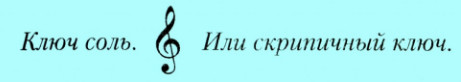
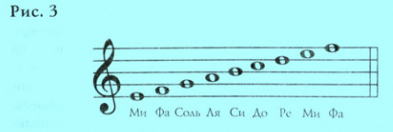
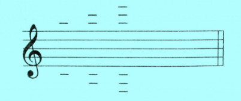
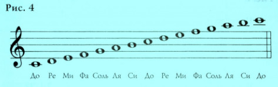

Основы теории музыки
Музыкальные символы:
Для графического представления нот используется система из 5 горизонтальных линий, которые составляют нотный стан.

Скрипичный ключ — помогает определить позицию ноты соль на второй линии нотоносца и благодаря этому определить положение других нот на нотоносце (нотном стане).

Вместе ноты, расположенные на линиях, а также ноты, расположенные в промежутках между линиями, представляют собой порядок звуков, расположенных по высоте: от более низких к более высоким.

Эти линеечки представляют собой фрагменты линий нотного стана, выходящие за его пределы , и применяются для того, чтобы расширить диапазон доступных звуков.

наверх